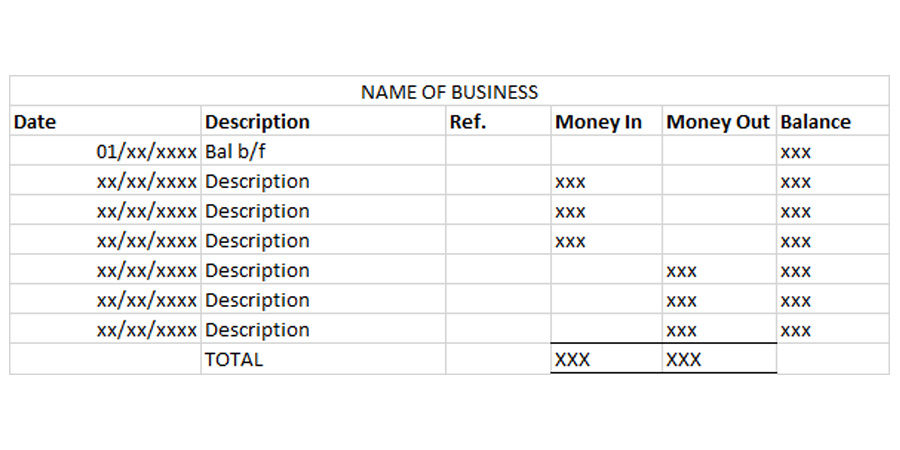

2.2.2 Format
Date: the date on which the transaction took place.
Description: a short explanation of the transaction.
- The first entry of the month is named “Bal b/f” which is short for Balance Brought Forward.
- This is the last balance amount from the previous month.
- If you are starting a new business, there is no previous balance and so the Balance Brought Forward is 0.
Ref: short for reference.
- It is anything that can be used to track the transaction such as a receipt number.
- If there is no reference, then it can be left blank.
Money In: the amount of money that has come into the business from the transaction.
Money Out: the amount of money that has gone out of the business from the transaction.
Balance: the amount of money the business has at the end of each transaction. It is calculated by:
Balance = Previous Balance + Money In - Money Out
- Each transaction can only have one amount, either the money is coming into the business or the money is going out of the business. It cannot be both.
- The last balance amount at the end of the month is called Balance Carried Forward or 'Bal c/f' in short. This will be the Balance Brought Forward for the next month.